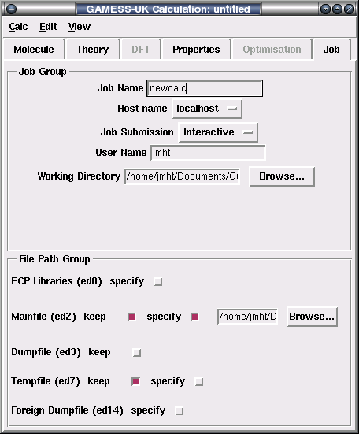

The GAMESS-UK window provides an easy-to-use interface to select the options for a GAMESS-UK calculation on a molecule.
Save the currently selected options and the molecule to a .clc file so that the editing of the calculation can be returned to a later time.
Run a GAMESS-UK calculation with the currently selected options. If the input file has been edited manually with the Edit -> Input option, any edits will be overwritten.
Write a GAMESS-UK input file in the directory specified in the Working Directory tool in the job tab. If no directory is specified, the directory from which the CCP1GUI was started is used. The output file will be saved with same name as the molecule being edited, but with the suffix .in appended.
Run a GAMESS-UK calculation using the input file that was written with the Write Inputfile option - including any manual edits that may have been made with the the Edit -> Input option.
Close the GAMESS-UK calculation window. Any unsaved changes will be lost.
Open the Inputfile that was written with the File -> Write Inputfile in a simple text-editor window. Clicking Ok in the editor window saves the results of the edit to file and Cancel discards them.
View the GAMESS-UK input file.
View the GAMESS-UK output file for the most recent calculation.
View a summary of the results of the GAMESS-UK calculation as extracted from the output file. The results will be displayed in the Python terminal from which the CCP1Gui was run.
The options in this tab set up some of the most basic and general options for the calculation.
This group sets the basic options for the calculation.
Title - a title for the calculation can be entered here. This will be displayed at the head of the GAMESS-UK output file.
Task - this can be used to select the type of GAMESS-UK calculation that will be undertaken.
Energy - this undertakes a single-point energy evaluation, followed by any additional calculations/anaylses that may have been specified.
Gradient This forces the computation of both the energy and the forces.
Geometry Optimisation - this optimises the geometry of the molecule by searching for a local minimum on the potential energy surface. Additional optimisation options can be set in the Optimisation tab.
Charge - specify the overall charge on the molecule.
Spin Specify the spin multiplicity of the molecule (1 = singlet, 2 = doublet etc.).
Check Spin - this checks the spin multiplicity of the molecule is consistent with the number of electrons in the molecule.
Use Symmetry - by default, the GAMESS-UK SCF, MCSCF and CI modules are performed internally in a symmetry adapted basis set. This involves the automatic generation of a symmetry adapted list of functions driven from the input molecular geometry and basis specified, and subsequent characterisation of the molecular orbitals in terms of the generated list. The Use Symmetery option toggles this behaviour on or off.
The tools in this group are used to select which basis sets are applied to each of the atoms in the molecule. The currently applied basis set is shown in the Current Basis Assignment window.
Default Basis - this is used to select the basis set that is applied to all the atoms, unless other basis sets are specifically applied to atoms of a certain type using the Assign by atom type tool. The default basis set for GAMESS-UK is the 3-21G split valence basis set.
Assign by Atom Type - the tools in this group are used to apply specific basis sets to atoms of the specified type within a molecule.
Clicking on the Assign Type button will apply the basis set shown in the Choose Basis selector to the specified atom type. Any changes made in the Default Basis tool will now no longer apply to this atom unless it is selected again and the Clear Assignment button is pressed.
If the basis set that you require is not available from the menus, you can write or paste the basis set specification into the Custom Basis Specification window.
Any SCF calculation requires a guess to be made as to the form of molecular orbitals or eigenvectors used as a starting point for the iterative process. The guess menu tool can be used to select between the three main methods offered by GAMESS.
Compute - the guess is calculated using an initial property of the molecule. The available options are:
atoms - the guess is based on concatenating the 1-particle density matrices for each of the component atoms of the molecular system.
atorbs - the starting orbitals are constructed as a concatenation of the atomic orbitals of the atoms. This is not generally recommended, but is useful for subsequent valence bond calculations and for calculations on atoms.
minguess - construct and diagonalise a Huckel type matrix. This option is limited to minimal basis sets (e.g. STO3G), but in such cases often leads to a reliable set of MOs.
extguess - limited to split-valence basis sets (e.g., 3-21G, 4-31G etc.), leading in general to a reliable set of orbitals.
Dumpfile - the Dumpfile method uses a set of orbitals that have been calculated during a previous run of the calculation and stored in the dumpfile (which is connected to the GAMESS-UK output stream ed3). The orbitals are read from the dumpfile at the section specified by the counter tool. If an UHF, GVB or UDFT calculation is performed, two sections will need to be specified, one for the alpha orbitals and one for the beta. If, for example, the calculation that created the dumpfile was a UHF calculation, and the current one is one of RHF, GVB or UDFT, then both a and b sections for the current calculation will need to point at the section where the orbitals were stored by the foregoing RHF calculation (the default for RHF calculations being section1).
Section a/b - the section where the vectors for the α or β can be found.
For an explanation of how to specify the dumpfile for a calculation see the File Path Group in the Job Tab.
GETQ - this uses a set of orbitals from a foreign dumpfile. A foreign dumpfile is the dumpfile from a calculation where, for example, the geometry of the molecule may be different to the current run, the symmetry adapted option was different or a smaller basis set was used. In fact the only similarities required to use a dumpfile from a previous calcualtion using the GETQ option, is that the ordering of the nuclei presented in the z-matrix definition lines be the same for both. If the GETQ option is selected, the block and section of the dumpfile where the orbtials were written to needs to be specified:
Block a/b - the block of the dumpfile where the vectors for the α or β can be found.
Section a/b - the section where the vectors for the α or β can be found.
For an explanation of how to specify the foreign dumpfile for a calculation see the File Path Group in the Job Tab.
The group of options here determine the base SCF calculation options as follows:
SCF Method This determines the type of SCF calculation that will be undertaken. The available options are:
RHF - a Restricted Hartree-Fock calculation (closed shell).
UHF - an Unrestricted Hartree-Fock calculation (open shell).
DFT - a Density Functional Theory calculation (closed shell).
UDFT - an unrestricted Density Functional Theory calculation (open shell).
Direct RHF - perform a RHF calculation but recalculate the integrals as needed.
Direct UHF - perform a UHF calculation but recalculate the integrals as needed.
Direct GVB - perform a GVB calculation but recalculate the integrals as needed.
Direct DFT - perform a DFT calculation but recalculate the integrals as needed.
Direct UDFT - perform a UDFT calculation but recalculate the integrals as needed.
Max. Cycles - this sets the maximum number of SCF iterations that will be carried out if the calculation has not already converged or run out of time by then.
Threshold - this specifies the 'accuracy' of the calculation by determining when to stop the SCF iterations. This occurs when the value of the tester is equal to 10-n, where n is the value specified in the threshold field (the tester value is the largest absolute value of the occupied/virtual block of the Fock matrix in the Molecular Orbital basis).
Bypass SCF - if a previous calculation has been carried out the molecule and the resulting vectors saved in the GAMESS-UK dumpfile, selecting the bypass options causes these results to be used negating the need for a fresh SCF calculation.
SCF Level Shifters The tools in this group control the level shifters that can be used to control the convergence of an SCF calculation. The level shifters work by artificially raising the energy of the virtual orbitals E Hartrees above the occupied orbitals, thereby artificially stabilising the iterative process and improving convergence. The available options are:
Initial Levelshifter Value - the difference in energy (in Hartrees) between the virtual and occupied orbitals for the first n cycles.
Cycle to change on - the SCF iteration at which the levelshifter value will be altered.
Final Levelshifter Value - the energy difference between the virtual and occupied orbitals until the DIIS solver is in operation.
This is used to select amongst the post-SCF calculations available within GAMESS-UK. The options are:
MCSCF - multi-configuration SCF.
MP2 - second-order Møller-Plesset perturbation.
MP3 - third-order Møller-Plesset perturbation.
CCSD - coupled-cluster single and double substitution.
CCSD(T) - coupled-cluster single, double and a quasi-perturbative estimate for connected triple excitations.
Direct CI - direct configuration interaction.
MRDCI - multi-reference single- and double-excitation configuration interaction.
Direct MP2 - as standard MP2 but recalculate the integrals as needed, as opposed to keeping them in memory
If one of the DFT options was selected in the SCF options in the Theory tab, then the DFT options here will apply.
The functional tool is used to select the Exchange-Correlation Functional to be used. Available functionals are:
SVWN - Slater, Vosko, Wilk, Nusair functional.
BLYP - Becke's gradient-corrected exchange functional with the Lee-Yang-Parr gradient-corrected correlation functional.
B3LYP - Becke 3-parameter hybrid exchange combined with the LYP exchange-correlation functional.
B97 - Becke-97 functional.
HCTH - Hamprecht-Cohen-Tozer-Handy pure DFT functional.
FT97 - Filatov and Thiel functional.
Together, these settings determine the accuracy of the DFT calculation:
Grid setting - this determines the accuracy of the Quadrature Grid.
low - should only be used for preliminary studies; the grid is designed to obtain the total number of electrons from the density integration with a relative error of 1.0e-4 per atom.
medium - this grid is designed to obtain a relative error of less than 1.0e-6 in the number of electrons per atom.
high - the grid is designed to obtain a relative error of less than 1.0e-8 in the number of electrons per atom.
very high - this grid is significantly more accurate then the high grid, and is only designed to be used for benchmarking calculations.
DFT Weighting Scheme - this selects a weighting scheme to combine the atomic integration grids to a molecular integration grid. Available schemes are:
Becke - the original Becke weighting scheme.
MHL - the Murray, Handy and Laming weighting scheme. This leads to more accurate integrals than the Becke scheme.
SSF - the Stratmann, Scuseria and Frisch weighting scheme, which seems to be the most accurate for large quadrature grids.
MHL4SSF - the Stratmann, Scuseria and Frisch weighting scheme with screening, but employing the cell function by Murray, Handy and Laming weighting scheme with μ equal to 4.
MHL8SSF - as above but with μ equal to 8.
The settings here allow the type of angular and radial integration grid to be specified explicitly.
Radial Grid - this determines the settings for the radial integration grid. Available options are:
default - the default setting will apply.
Euler-MacLaurin - the Euler-MacLaurin grid will be used. If this option is selected, a tool will be displayed that allows the number of gridpoints to be selected.
Mura-Knowles - the Mura-Knowles grid will be used. If this option is selected, a tool will be displayed that allows the number of gridpoints to be selected.
Angular Grid - this determines the settings for the angular integration grid. Available options are:
default - the default setting will apply.
Lebedev-Laikov - the Lebedev-Laikov grid will be used. If this option is selected, a tool will be displayed that allows the number of gridpoints to be selected.
Gauss-Legendre - the Mura-Legendre grid will be used. If this option is selected, a tool will be displayed that allows the number of gridpoints to be selected.
Coulomb fitting reduces the cost associated with DFT calculations of medium sized molecules by avoiding the calculation of 4-center 2-electron integrals. This can be achieved by choosing a functional without Hartree-Fock exchange and evaluating the Coulomb energy with an auxiliary basis set. The tools in this group control Coulomb Fitting.
Use Coulomb Fitting - if this box is selected, Coulomb fitting is turned on and two additional tools are displayed that allow the fitting to be configured:
Fitting Basis - Coulomb fitting requires an additional basis set for the atoms in the molecule, and the options here are used to determine the basis set to be used. Available options are:
A1DGAUSS - use the A1-DGAUSS fitting set.
A2DGAUSS - use the A2-DGAUSS fitting set.
DEMON - use the DeMon fitting set.
AHLRICHS - use the fitted basis sets tabulated by Ahlrichs and co-workers.
Schwarz Cutoff - the number of 3-centre integrals can be reduced by neglecting those that are small enough to be considered insignificant. The Schwarz inequality is used to decide the cutoff point below which integrals are not important, with the Schwarz tolerance being set to 10-n, where n is the number entered in the box.
The options here define the molecular properties to be calculated by GAMESS-UK. The upper half of the tab is used to control the graphical options that are to be plotted. The magnitudes of these particular molecular properties are mapped to a grid, the properties of which can be specified with the Edit Grid option. The molecular properties that can be calculated are:
Difference Density - this calculates the difference between the total electron density associated with a molecule and the sum of the electron densities of the atoms which constitute the molecule, but which are assumed to have undergone no interactions with each other, and have remained undistorted as in the free state. As such, it provides an indication of the overall rearrangement of density which occurs when the atoms come together upon molecular formation.
Potential - the value of the electrostatic potential created by the electronic distribution and nuclear charge of the molecule.
HOMO/LUMO - the Highest Occupied Molecular Orbital and the Lowest Unoccupied Molecular Orbital.
HOMOn/LUMOn - the nth orbital in energy below the HOMO and the nth orbital above the LUMO.
Charge Density - the electron density associated with the molecule.
Difference Density - this calculates the difference between the total electron density associated with a molecule and the sum of the electron densities of the atoms which constitute the molecule, but which are assumed to have undergone no interactions with each other, and have remained undistorted as in the free state. As such, it provides an indication of the overall rearrangement of density which occurs when the atoms come together upon molecular formation.
Potential - the value of the electrostatic potential created by the electronic distribution and nuclear charge of the molecule.
The options in lower half of the tab determine that GAMESS-UK should calculate the force constants that determine the vibrational frequencies of the molecule. This can be done in two ways namely:
Finite Difference - this indicates that GAMESS-UK will calculate the force constants numerically by taking finite differences of the gradient using a one-point formula.
Analytic - this option is a combination of tasks, requesting integral generation, SCF, gradient evaluation (with additional evaluation of derivative Fock operators), integral transformation, solution of the coupled Hartree-Fock (CHF) equations, calculation of the two-electron second derivative contribution and, finally, determination of the projected harmonic frequencies. This approach is generally more accurate than the numerical approach, but is only vialable for SCF and DFT wavefunctions, together with MP2 closed-shell wavefunctions.
NB: the above options are only applicable if the geometry of the molecule has already been optimised in a previous calculation or if an optimisation is carried out as part of the current calculation.
When a graphical analysis option is selected, the GAMESS-UK calculation will output a grid of points where the selected molecular property has been calculated at each point. The Edit Grid button brings up a separate window which can be used to tune the properties of the Grid. The options available for the grid are:
X,Y,Z Tran - the slider can be used to shift the origin of the grid's x,y, or z-axis. Alternatively the shift can be specified in Angstroms and entered in the box to the right of the slider.
X,Y,Z Rot - the slider can be used to rotate the grid about the x,y or z-axis. Alternatively the angle of rotation can be entered in the box to the right of the slider.
X,Y,Z Scale - the slider can be used to scale the length of the x,y or z-axis, or the relative value can be entered in the box to the right.
nx, ny, nz - this counter is used to specify the 'mesh density' along the x,y or z-axis. For rectangular grids, this is the total number of points along the axis.
Transform - apply any changes that are pending.
Close and Save - close the Grid Editor window and return to the calculation window, saving any changes that have been made.
Reset - reset the grid to its default values.
Close and Cancel - close the Grid Editor window and return to the calculation window, but discard any changes that have been made.
If the Task has been selected as Geometry Optimisation in the Molecule Tab, then the options here determine how the geometry optimisation will proceed.
The options in this group determine the type of geometry optimisation that will be carried out.
Opt. Coords - this determines the optimisation method that will be used. The options are:
Z-Matrix - this selects a quasi-Newton rank-2 update procedure in internal coordinates. This is the recommended method but requires the molecular coordinates to have been specified in internal coordinate form and the variables that are to be optimised to have been specified.
Cartesian - if this is selected the optimisation uses a Cartesian-driven update method. The Cartesian geometry optimisation cannot be used when searching for a transition state or using the Jorgensen/Simmons optimisation algorithm.
Locate Transition State - if this checkbox is selected then the geometry optimisation will not search for the global minimum, but will instead try and determine the geometry of a transition state. A transition state search can only be undertaken if the z-matrix is in internal coordinate form and the variables that are to be optimised have been specified.
The options in this group allow the user a certain amount of control over the implementation of the selected optimisation strategy.
Energy evaluations - this number determines the maximum number of energy evaluations (geometry optimisation steps) that will be permitted.
Line searches - this is the maximum number of line searches that will be permitted during the optimisation.
Convergence Thresh. - this determines the convergence threshold: the point at which the geometry optimisation is deemed to have converged.
For a Z-matrix minimisation or Transition State Search, this is when:
maximum change in variables < Convergence Threshold
average change in variables < Convergence Threshold * 2/3
maximum gradient < Convergence Threshold * 4/9
average gradient < Convergence Threshold * 8/27
For a Cartesian optimisation, this is when:
The maximum component of the gradient is equal to the value specified for the Convergence Threshold.
Max. Step Size - this determines the largest change that will be permitted to be made to variables during the optimisation. If a Z-Matrix minimisation or Transition State Search is being carried out this this number determines the maximum change in bond length in Bohrs, or change in bond angle in radians. For a Cartesian optimisation the number specifies the maximum permitted change in the Cartesian coordinates.
Turning Point Accuracy - This option is only applicable to a Z-Matrix minimisation or Transition State Search and controls the accuracy of the search for a turning point during a line search. This value should be set between 0.0 and 1.0, with a smaller value leading to a more accurate line search.
If the checkbox is selected it indicates that the Jorgensen/Simmons quasi-Newton-Raphson minimisation algorithm should be used. This is only applicable when a Z-Matrix minimisation or Transition State Search is being undertaken.
Hessian Update Procedure - this option is only displayed if the geometry optimisation is searching for a minimum and not a transition state. If displayed it can be used to select whether the Hessian update procedure is the default, BFGS, or BFGSX (a modified BFGS update procedure with safeguards to ensure retention of a positive definite Hessian).
Use Powell Hessian Update - this option is only displayed if a transition search is being undertaken and determines that the Hessian should be updated using the Powell update procedure.
Min. Hessian Eigenvalue - the minimum permitted value for a Hessian eigenvalue.
Max Hessian Eigenvalue - the maximum permitted value for a Hessian eigenvalue
Use Rational Function Optimisation - this is used to control the nature of the steps taken in the search procedure. If RFO is selected, a menu is presented that allows the user to select the default specification for RRO.
OFF - Newton-Raphson steps will be taken where appropriate, instead of RFO or P-RFO steps.

The tools in this tab set up various external atrributes of the GAMESS-UK that will be run.
The tools in this group are used to configure the environment that the GAMESS-UK job will be run in.
Jobname - the name of the GAMESS-UK job. All of the files created by the calculation will have whatever jobname has been specified as, as their stem unless they are specifically renamed using the tools in the file path group (see below).
Hostname - the name of the host where the calculation is being run. If your GAMESS-UK executable is located on your local machine (i.e. the computer you are running the GUI on), this should be set to localhost.
Job Submission - this is not active at present.
User Name - the UNIX username of the user submitting the job.
Working Directory - this is used to select the directory where the GAMESS-UK input file, and any output files , will be created.
The tools in this tab set the names and locations of the files that will be connected to the various ed streams used by GAMESS-UK.
ECP Libraries - ed0 is used to specify the directory containing the pseudopotential libraries used for non-local pseudopotential calculations. If the specify button is clicked, a text window and browse button will appear, which can be used to specify the location of this directory.
Mainfile (ed2) - this file is used to hold the two electron integrals generated by GAMESS-UK. If the keep button is selected, this file will be saved in the directory the calculation is run in, with the name specified by the jobname tool and the suffix .ed2. If the specify button is selected, the name and location can be specifed as desired.
Dumpfile (ed3) - the dumpfile holds a variety of information including the eigenvectors, restart information Hessians, CI-coefficients etc. You must save the dumpfile for a calculation if you intend to undertake any subsequent calculations based on the results of this calculation. It is also vital to specify the dumpfile you wish to use if you are performing a calculation that requires any information contained in the dumpfile from a previous calculation. It is important to note that the dumpfile from a previous calculation will be overwritten with the new values if it is specifed here.
If this is the first of a series of calculations and no information from previous calculations is requried, the keep button will cause the dumpfile for this calculation to be saved in the directory the calculation is running in, with the name specified by the jobname tool and the suffix .ed3. Alternatively, the specify button can be used to select an arbitrary name and location. If the current calculation uses information from a previous calculation, then the same applies, but the eigenvector information will be read from this file, before the values are overwritten with those for the current calculation.
Tempfile (ed7) - this file is the temporary file used by GAMESS-UK and holds various housekeeping information used by the program as it runs. Normally this file is located in the directory specified by the GAMESS_TMP environment variable, or, failing that, the directory specified by the GAMESS_SCR enviroment variable, or, as a last resort, the directory that the calculation runs in. If for any reason you believe there may not be enough space in any of these directories, or they are located on disks that are not fast enough, an alternative location can be specifed with this tool. If the keep button is selected, this file will be saved in the directory the calculation is run in, with the name specified by the jobname tool and the suffix .ed7. If the specify button is selected, the name and location can be specifed as desired.
Foreign Dumpfile (ed14) - this is used to specify the location of a foreign dumpfile. For more information about foreign dumpfiles see the GETQ option in the Guess Section of the Theory Tab. It is important to note that if a file is specified as a foreign dumpfile, it is only read from and not written to. If the dumpfile for the current calculation is to be kept, it should be specified with the ed3 dumpfile tool described above.
If the specify button is clicked, a text window and browse button will appear, which can be used to specify the location of this file.